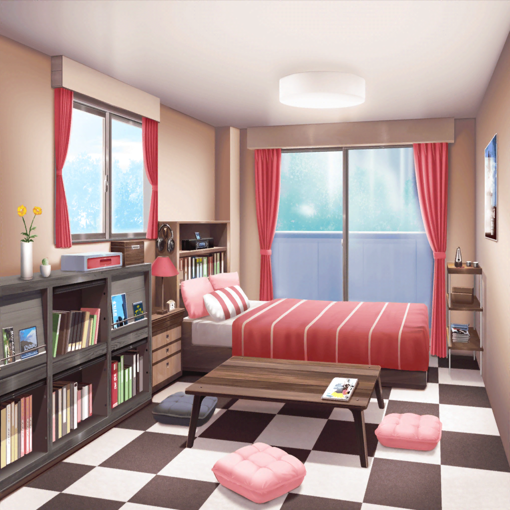

宇田川家 巴の部屋
あこ
おねーちゃん、これ！
借りてたCD持ってきたよ〜！
巴
ああ、そういえば貸してたな。
どうだった？
あこ
うんっ！ すっごくカッコよかった！
ギャーンって鳴ってるギターとか、ベースもいい感じに
ゴリゴリしてたよー！
あこ
それにね、Cメロ前のドラムソロ！！！
あれほんっとカッコよかった！
巴
だろ〜！？ アタシも、そのドラムソロに惹かれて
このCD買ったんだよ。さっすがあこ、わかってんな〜！
あこ
ふっふーん、とーぜんだよっ！
巴
でも、わざわざ部屋まで来るなんて珍しいな。
いつもは夕飯のついでとかだっただろ？
あこ
うん、そうなんだけど……今日はその、ちょっと……
おねーちゃんに言いたいことがあって
巴
？ どうした？ なんかあったのか？
あこ
おねーちゃん、この前はありがとうございましたっ！！
巴
……はぁっ！？
巴
ど、どうしたんだよ突然。
アタシ、別にお礼を言われるようなことしてないぞ？
あこ
ううん、そんなことない。
今のあこがいるのは、おねーちゃんのおかげだよ
あこ
この前、Roseliaがちょっと……
微妙な感じになっちゃった時……
あこ、おねーちゃんに相談に乗ってもらったでしょ？
巴
ああ、そういえばそんなこともあったなー
あこ
あの時ね、本当はあこだけじゃなくて……Roselia全員が
なんかモヤモヤしてたんだ
あこ
みんなバラバラで、ぐちゃぐちゃーってしてることはわかるのに
抜け出し方が見つからなくて、
それでモヤモヤばっかりがたまっていって……
巴
……
あこ
おねーちゃんが、『自然にバンドは元に戻る』って
言ってくれたの……あの時はあんまりよくわかんなかったけど、
それでも少し安心したんだ
あこ
だからあのあと、いっぱいいっぱい考えられたんだと思う。
おねーちゃんがあんな風に言ってくれなかったら、
きっと今もぐるぐるしてたよ
あこ
……あこ、おねーちゃんに相談して良かった
あこ
だから、もう１回言うね。
おねーちゃん、あこの相談に乗ってくれて
ありがとうございました！
巴
あこ……くうっ。おねーちゃんは嬉しいぜ……！
あこ
わわっ！ おねーちゃん！
急に頭撫でられたらビックリするよ！
巴
悪い悪い！ でもなんかこう……じーんときちゃってさ。
あこがどんどん成長していくんだなーってさ……
巴
でも、やっぱりアタシにお礼は必要ないぞ、あこ。
きっかけはアタシの言葉だったかもしれないけどさ
巴
そのあとで、あこなりにしっかり考えたからこそ、
今のあこになったんだと思う。
だから、仲直りもRoselia復活も、みーんなあこの手柄だ
巴
少なくとも、アタシはそう思うよ
あこ
お……おねーちゃん……
あこ
おねーちゃん、ありがとー！
やっぱりおねーちゃんは、最っ高のおねーちゃんだよっ！
巴
あはははっ、急に抱きつくなよ。
ビックリするだろ〜？
巴
そうだ、あこ。
あの時言ったこと、まだ１つだけやってないことがあるぞ
あこ
やってないこと？
巴
ああ。今はもう仲直り終わったあとだけど
やって損はないはずだ。
まずはアタシがやって見せるから、よーく見てろよ？
あこ
う、うん……って、おねーちゃんどうしたの？
急に窓開けたりして……
巴
いいから見てろって。
いくぞー……
巴
……アタシはー！ Afterglowが大好きーーーーーーーっ！！！
あこ
！！！！！
巴
よしっ。ほら、次はあこの番だぞ！
あこ
ええっ！？ でも……
巴
だーいじょうぶだって。
今あこがRoseliaに思ってること、
こっからぶつけてみろよ。きっとみんなにも届くはずだぞ
あこ
みんなにも、届く……
……うんっ！
あこ
あこはー！ Roseliaがー！
大好きーーーーーーーーーーーーっ！！！！！！！
巴
ははっ、でっかい声。さっすがアタシの妹だ！
あこ
おねーちゃんもー！ 大好きーーーーっ！！！

住宅地
友希那・リサ
！！！！！
リサ
な、何今の声！？ すっごく大きい声で
『Roseliaが大好きーーーっ！』って……
友希那
『おねーちゃんも大好き』……？
あれはきっと、あこの声ね
リサ
だよね〜？ あはは……すごいねーあこ。
あこんち、結構遠かった気がするけど
ここまで聞こえてくるなんて
リサ
Roseliaが大好き、かぁ……ねえ友希那。
今のやつ、今度みんなでやってみる？
教室から『Roseliaが大好きー！』って叫んでみるの
友希那
何を言っているの？ 私はあんなことは…………
いえ……もしかして、
今のRoseliaには必要なことなのかも……
リサ
あ、あれ？ 意外とやる気……！？